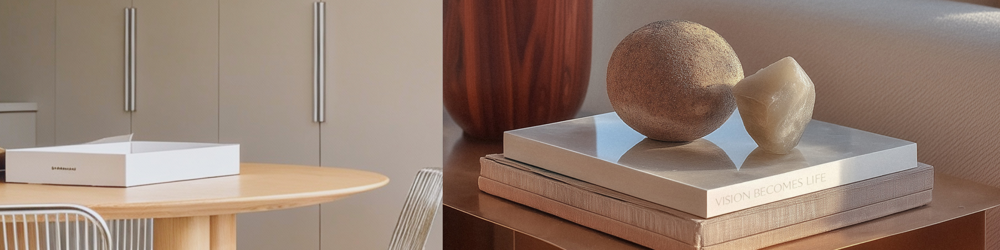
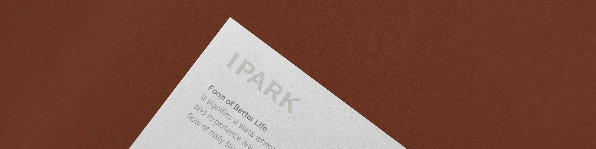
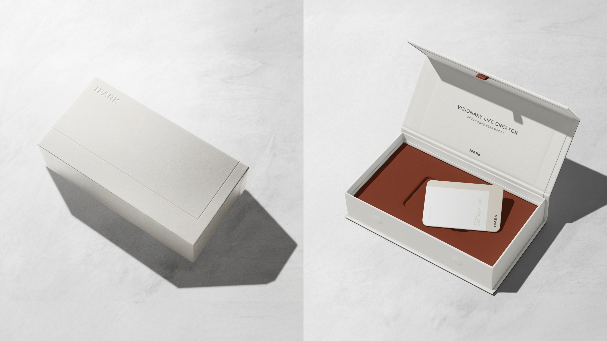
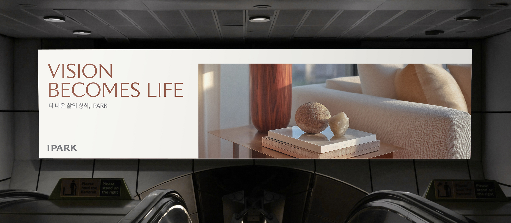
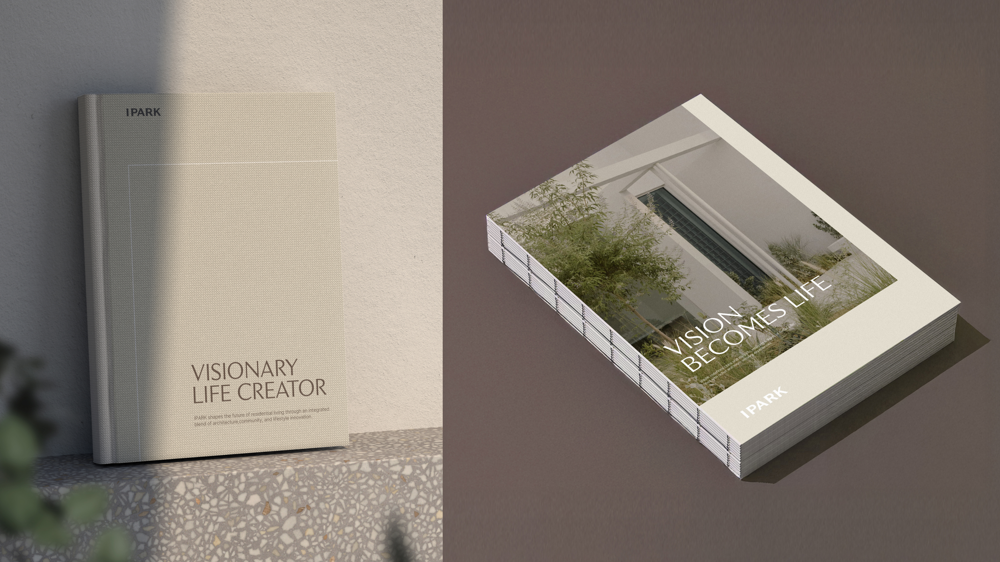

DESIGN`, subTitle: `삶을 설계하는 IPARK의 디자인 철학`, desc: `IPARK의 디자인은 AI 기술과 친환경 감성을 결합해
사람의 감각과 도시의 리듬을 아우르는
주거 경험을 제안합니다. 기술과 자연의 균형 속에서
다양한 일상과 문화를 유기적으로
연결해 삶에 온기와 활력을 더합니다.`, })%>
Brand Design Philosophy
IPARK의 철학이 담긴
아이덴티티
구현하는 디자인
IPARK의 디자인은 AI 기술과 친환경적 감성을 융합하여 더 나은 삶의 형식을 입체적으로 구현합니다.
우리는 공간을 짓는 것을 넘어, 사람의 감각을 확장하고 도시의 리듬을 조율하는 동반자입니다.
기술과 자연의 조화가 이루는 균형 속에서 도시와 일상에 온기와 활력을 더합니다.
Brand Design Principle
IPARK의 비전이 담긴
디자인 기준
-
CIRCULARITY
지속 가능한 생태적 균형을
설계하는 디자인IPARK는 도시, 건축, 사람의 관계를 하나의
유기적 생태계로 이해합니다.
기술과 자연이 조화롭게 균형을 이루고
순환하는 삶의 균형을 만들어 갑니다. -
INSPIRING
INTELLIGENCE감성과 영감을 주는
공간 경험의 디자인IPARK는 진화하는 AI 기반의 스마트한 기술로
삶을 유기적으로 연결합니다.
IPARK의 공간은 우리의 감각을 깨우고 일상에
영감과 정서적 풍요로움을 선사합니다. -
LIVELY HARMONY
ATTENTIVENESS따뜻한 삶의 방식을
조화롭게 담은 디자인IPARK는 구조적 질서 안에서 일상의 온기와
안정감을 더합니다.
정제된 형태의 균형은 편안함과 활력이 공존하는 환경을 만들며, 삶의 활기와 온기를 더해 갑니다.
Color System
IPARK의 관점이 담긴
컬러
IPARK는 삶의 모든 순간과 공간을 설계하고 구현하는 통합 플랫폼으로,
Burnt Umber 컬러와 Ivory 컬러의 따뜻한 조화를 통해 IPARK의 브랜드 철학을 시각화합니다.
가장 근본이 되는 대지의 색이자 자연의 기반인 Burnt Umber 컬러는
일상의 깊이와 온기를 상징하면서 공간 속에서 느껴지는 감성의 밀도와 입체적 경험의 질을 표현하고,
섬세한 배려심과 수용성을 가진 Ivory컬러는 복잡한 시대 속에서 여백과 균형, 부드러운 포용의 감성을 품어
일상을 구성하는 모든 접점에서 유기적으로 연결하여 사려깊은 무드를 만듭니다.
두 컬러의 조화는 우리의 삶 속에서 새로운 감성적 균형을 이루며,
IPARK가 추구하는 ‘더 나은 삶의 형식’을 입체적으로 구현할 수 있게 삶의 활기를 선사합니다.

-
Natural Ivory
C4 M3 Y6 K0
R242 G240 B235 -
Beige
C11 M10 Y18 K0
R225 G219 B205Burnt umberC33 M83 Y93 K38
R122 G52 B32Charcoal blackC72 M66 Y65 K73
R33 G33 B33 -
White
C0 M0 Y0 K0
R255 G255 B255Copper metalC27 M62 Y72 K10
R173 G107 B79Mocha brownC50 M61 Y71 K43
R92 G71 B56Dark grayC65 M57 Y51 K28
R86 G87 B92
Typography System
IPARK의 태도가 담긴
서체
IPARK의 폰트 시스템은 IPARK의 삶을 대하는 태도를 반영한 또 하나의 언어입니다.
절제된 형태와 과장되지 않은 균형은 가독성을 높이고, IPARK가 추구하는 삶의 형태와
신뢰를 차분하게 전달합니다.

-
Pretendard 삶을 바꾸는 비전,
IPARKKOR
Headline / Subhead / Bodycopy
-
Inter Variable Form of
Better LifeENG
Headline / Subhead / Bodycopy / Number
-
Intrinseca Vision
Becomes LifeENG
Headline


